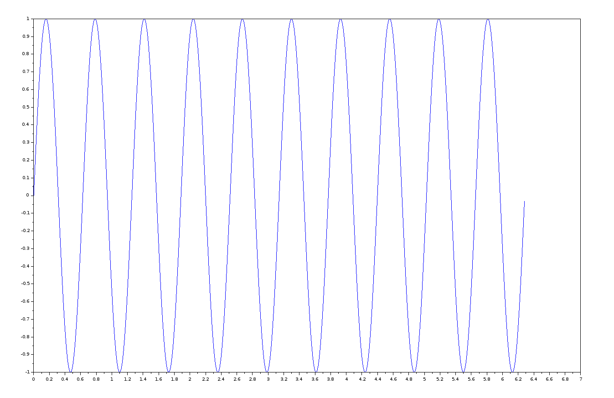
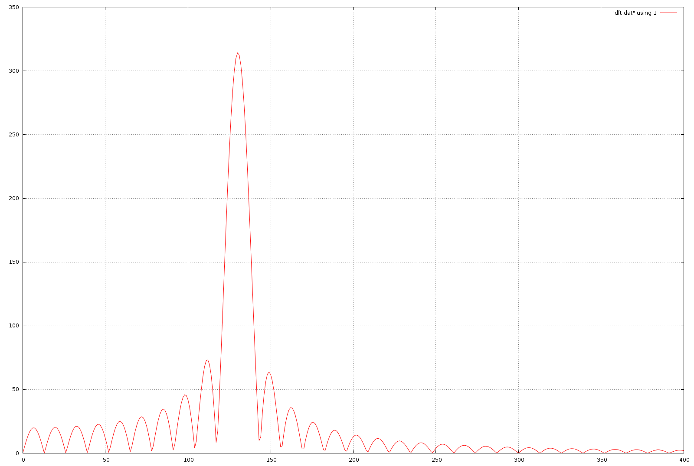

********* Archival *********
Discretized Fourier Transform of Sine Wave Using FFTW3 in Fortran
10Hz sine wave generating and converting to CSV file
SciLAB code to generate 10Hz sine wave

Image of 10Hz sine wave
CSV file containing discretized sine wave data
Processing of CSV file by Python script to strip commas and produce one data element per line
Python script that removes commas and produced one data element per line
Output file of Python script, with commas removed and one data element per line
Fortran 2003 code that uses the FFTW3 library to generate DFFT magnitude file
Fortran 2003 code that performs DFFT on output of Python Script
Output of DFFT Fortran program as magnitude

Output of GNUPlot of spectrum